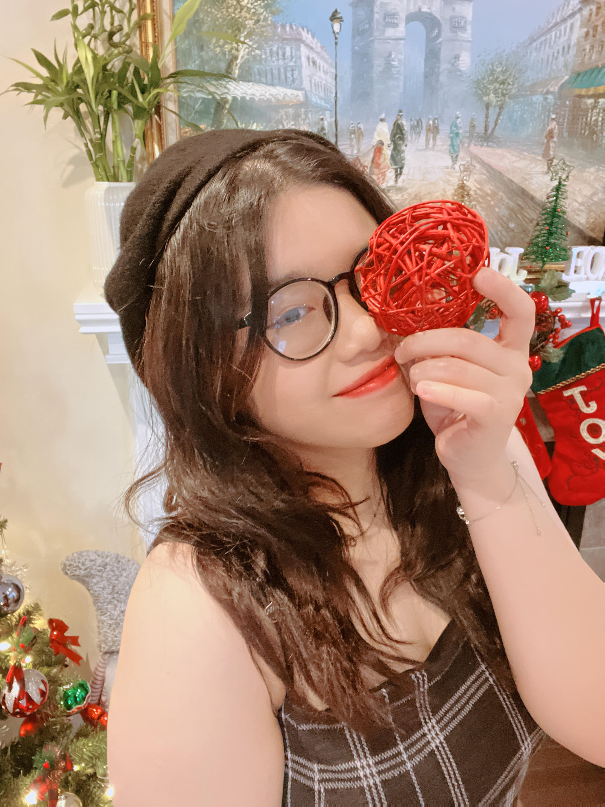
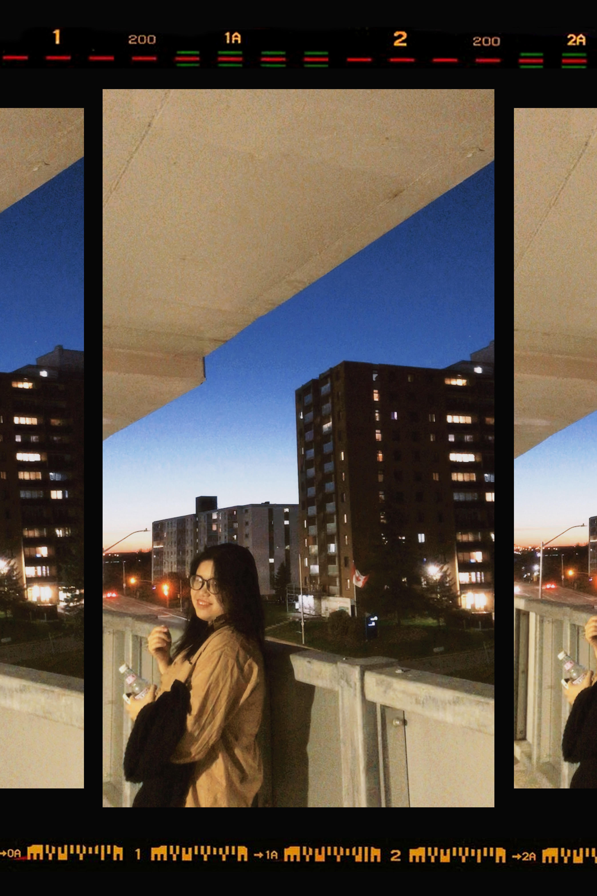

About Me
 Hello, my name is Tina, and I'm a Vietnamese girl approaching the age of twenty. I currently attend Interactive Media Design in Ottawa, the capital of the maple leaf region. I've lived in Canada with my family for seven years; we've now become citizens and have a solid existence here. I truly appreciate this free nation because I feel like I can be anyone I want to be here without being limited by myself.
Reading, viewing films, and listening to music are some of my pastimes. Usually, if I don't have to go to school or work, I'll treat myself to some quiet time, light a candle, switch on a warm study light, and listen to some soothing music while I read the books I have in my hands. I read in a variety of genres, but I frequently discover detective and horror because I find them to be so engrossing that I can't put the book down.
Although I tend to be quite an optimist, I can also be quite an introvert. I like to read books when I have leisure time mostly because I believe it will help me calm my hyperactive nature. The same time, as a result of that, I also learnt a lot about other philosophies, ideas, and perspectives in society, such as loving oneself better, how society views LGBT people, or what newlyweds think about DINK terminology (dual income, no kids).
These things also help me to realize another thing: since every person's life is unique, so will be their experiences, understandings, and points of view. "If you're not a fish, how do you know whether a fish is happy or not?" - thus neither you nor anybody else has any power over the lives of others.
My Hobbies
- Reading book
- Watching movie
- Listening to music
- Drawing and Painting
- Writing blog or short story
- Creating some meaningful word with many themes
Motivational quote
"I once heard that once you enter this planet, you must leave your mark. If you're shallow, at least try to be decent; if you're gifted and accomplished, you must commit your life to serving your nation and your fellow citizens. I'm not sure what I can achieve with my life, but at least I have a role model to aspire to: Full personality, self-control, heart filled with love for one's country and family, and eyes always open to the outside world. My youth is not being wasted if I can develop into such a person."
Tina